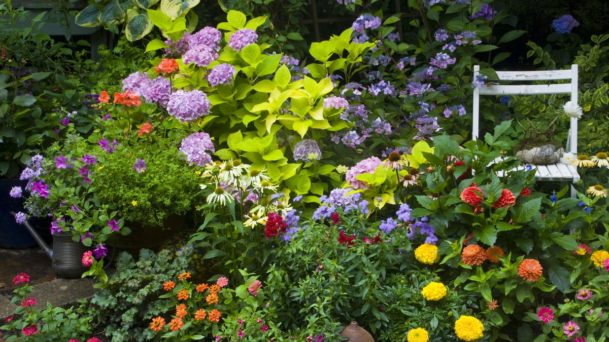
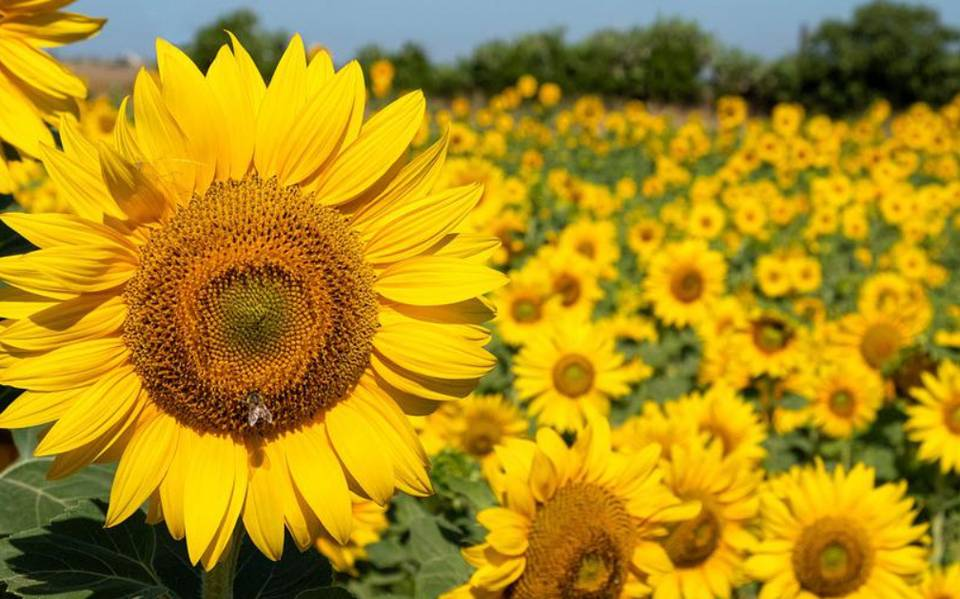
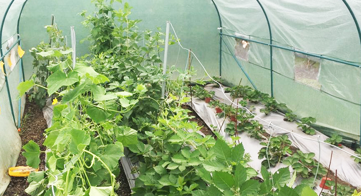

Tener un huerto organico es la mejor forma de ahorrar tu dinero.



La huerta orgánica es una forma natural y económica de producir hortalizas sanas durante todo el año.
Natural: porque imita los procesos de la naturaleza.
Económica: porque ahorramos dinero al producir nuestros alimentos.
Sana: porque producimos sin usar productos quí- micos.